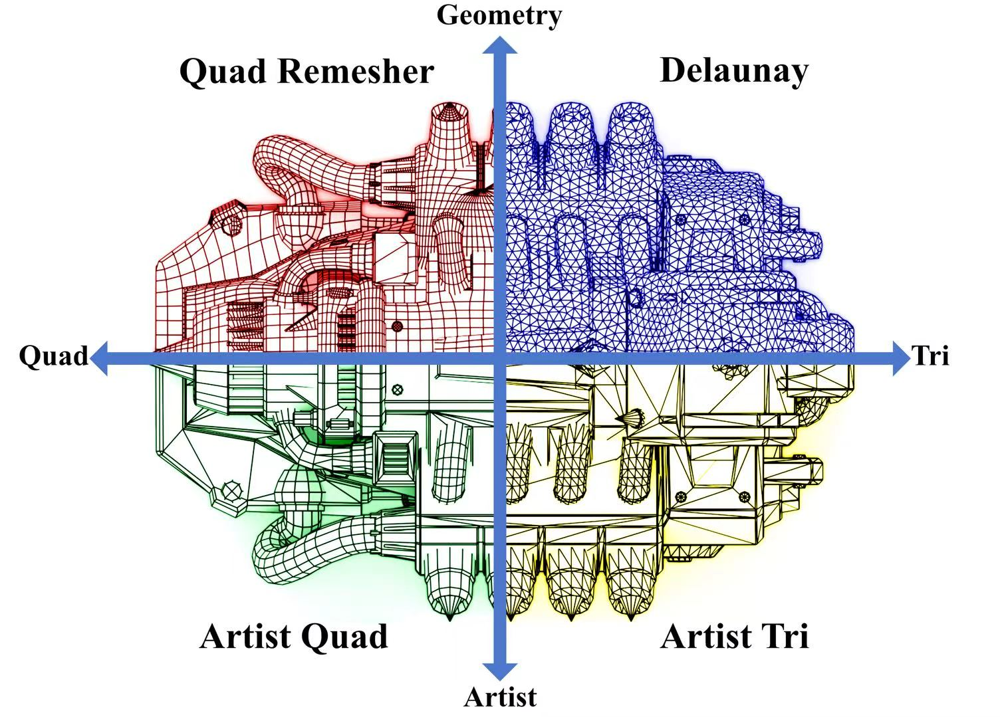
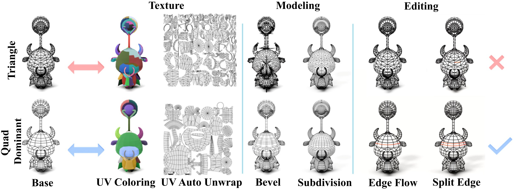
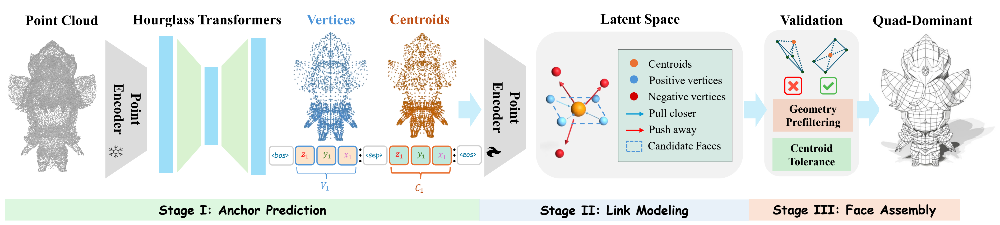
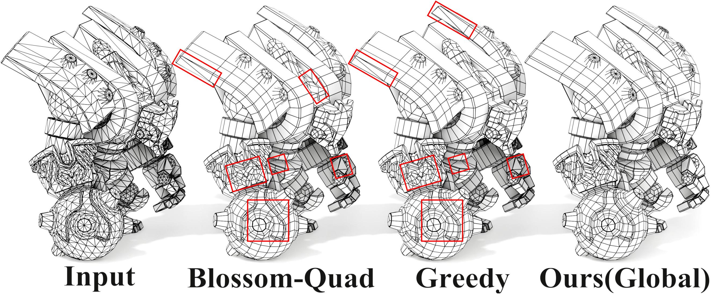
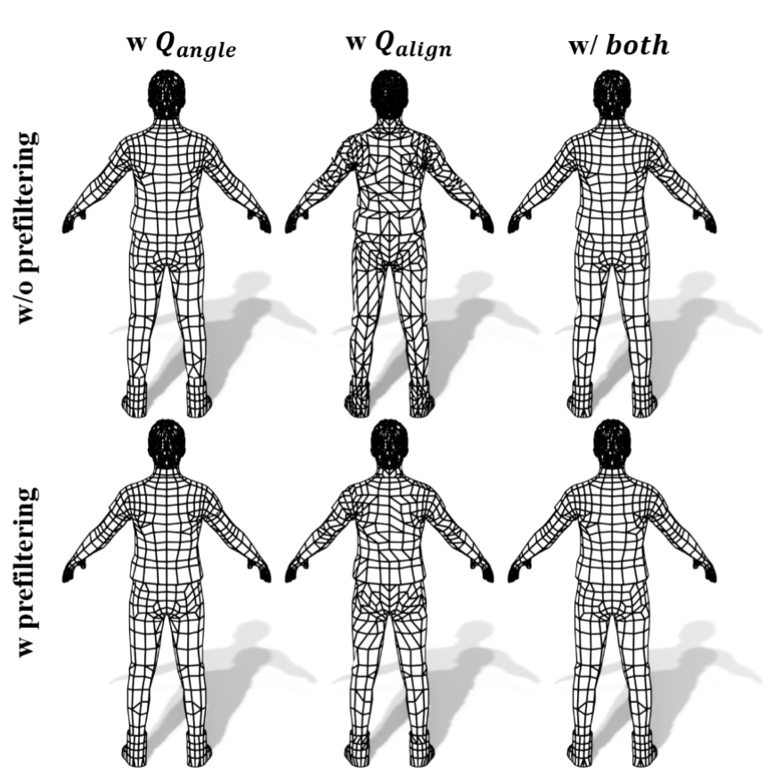
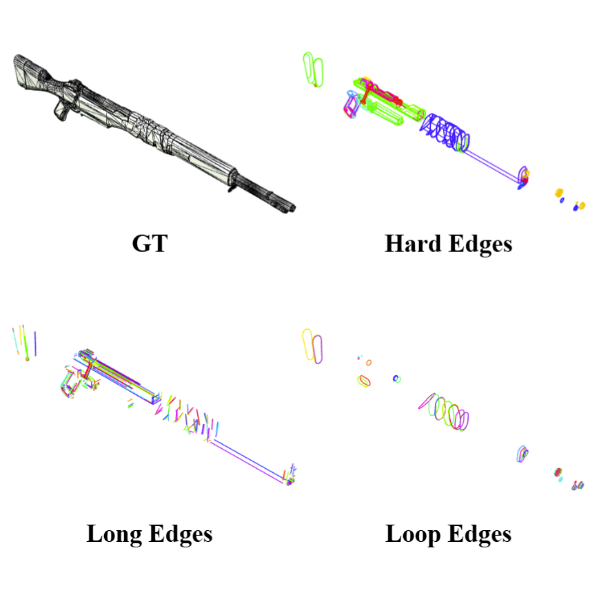

The generation of production-ready quad-dominant meshes is a cornerstone of modern 3D content creation. Generating anisotropic quad-dominant meshes from point clouds is challenging, as existing methods are typically limited to producing either pure triangular meshes or pure quadrilateral meshes with isotropic densities. In this paper, we present QuadLink, a unified framework consisting of three stages for quad-dominant mesh generation by linking points into structured faces. QuadLink formulates polygonal mesh generation as a hybrid centroid-conditioned vertex linking model: it first predicts a unified set of anchors (vertices and face centroids), then learns centroid-conditioned links that associate vertices with face centroids, and finally assembles polygonal faces with a quad-first strategy guided by robust geometric verification strategies. This link-based formulation enables efficient generation of sparse and anisotropic quad-dominant meshes with coherent edge flow and meanwhile supporting hybrid polygonal topology. To construct training data for this model, we further introduce a Tri-to-Quad Operator that converts artistic triangle meshes into quad-dominant training data via global merge selection. Extensive experiments show that QuadLink produces production-ready quad-dominant meshes from point clouds and achieves improved geometric fidelity and topological quality compared to prior baselines. Our method natively supports hybrid polygonal topology, generalizing to arbitrary n-gon meshes without architectural changes.

Quad-dominant meshes are composed predominantly of quadrilateral faces, while retaining a small number of triangles where complex topology or local transitions require them. Compared with dense triangle meshes, artist-designed quad-dominant topology provides clearer edge flow, more structured surface layout, and more editable geometry.
This representation is widely used in practical content creation because topology directly affects whether an asset can be edited, animated, simulated, and integrated into production pipelines. The figure above contrasts artist-style quad topology with triangle-based and remeshed alternatives, highlighting why geometry fidelity alone is not enough for production-ready 3D assets.

In modern workflows, quad-dominant meshes are preferred for modeling, animation, simulation, film, games, and industrial creation. Their regular edge flow supports deformation and editing, while the small number of necessary triangles helps resolve singularities and intricate local structures.

QuadLink first predicts mesh vertices and face centroids as primitive anchors from an input point cloud. It then learns centroid-to-vertex relations in a latent space using contrastive learning, pulling valid face vertices close to their centroids while pushing unrelated vertices away. Finally, a deterministic quad-first assembly module reconstructs faces with geometric prefiltering and centroid tolerance checks.
Generates a compact sequence of vertices and face centroids with axis-aware coordinate tokenization.
Learns centroid-conditioned vertex links in a contrastive feature space for robust face-level grouping.
Builds quad-dominant faces with progressive candidate selection, geometric verification, and triangle fallback.

We introduce a Tri-to-Quad Operator that converts widely available artist-designed triangular meshes into quad-dominant meshes with anisotropic structures and coherent edge flow. The operator combines geometric prefiltering, global merging selection, and deterministic normal-consistency enforcement, which produces training data that preserves production-ready quad-dominant topology to provide effective supervision for learning across all stages of QuadLink.

Ablations on the Tri-to-Quad Operator study geometry prefiltering and the merging quality terms Qangle and Qalign. Geometry prefiltering removes invalid candidates, while the angle term favors regular quads and the alignment term helps resolve ambiguous regions with smoother edge flow.

Edge Flow Ratio (EFR) measures whether a quad-dominant mesh preserves production-ready edge flow. We extract hard edges from the ground-truth mesh and group connected chains into long polyline features and closed loop features, then match output edge chains to these salient feature lines.
| Method | CD | HD | IoU | QR | EFR | Neatness | Artistry | Shape | Topology |
|---|---|---|---|---|---|---|---|---|---|
| BPT | 0.052 | 0.138 | 0.922 | 68.0% | 0.328 | 0.772 | 0.737 | 0.330 | 0.578 |
| DeepMesh | 0.076 | 0.211 | 0.886 | 77.3% | 0.381 | 0.808 | 1.021 | 0.882 | 1.097 |
| FastMesh | 0.036 | 0.087 | 0.954 | 5.4% | 0.244 | 0.238 | 0.516 | 0.558 | 0.322 |
| TreeMeshGPT | 0.153 | 0.372 | 0.696 | 85.9% | 0.201 | 0.080 | 0.063 | 0.089 | 0.065 |
| MeshMosaic | 0.062 | 0.233 | 0.924 | 47.2% | 0.292 | 0.230 | 0.492 | 0.420 | 0.386 |
| Instant-Meshes | 0.038 | 0.120 | 0.905 | 100% | 0.403 | 0.313 | 0.206 | 0.259 | 0.191 |
| QuadriFlow | 0.077 | 0.305 | 0.695 | 100% | 0.289 | 0.108 | 0.087 | 0.137 | 0.186 |
| QuadWild | 0.022 | 0.086 | 0.978 | 100% | 0.547 | 1.136 | 0.486 | 0.832 | 0.703 |
| Ours | 0.021 | 0.056 | 0.995 | 79.4% | 0.714 | 2.315 | 2.392 | 2.493 | 2.472 |
Table 1 : Objective metrics and User Study comparison. QR is reported as a reference statistic, while EFR measures structured edge-flow quality.
If you find our work helpful, please consider citing:
@article{zhang2026quadlink,
title={QuadLink: Autoregressive Quad-Dominant Mesh Generation via Point-Relation Learning},
author={Zhang, Yiheng and Zhu, Zhe and Shen, Tingrui and Cai, Zhuojiang and Li, Tianxiao and Zhao, Zixing and Dong, Qiujie and Dou, Zhiyang and Wang, Jiepeng and Wan, Le and others},
journal={arXiv preprint arXiv:2605.16813},
year={2026}
}